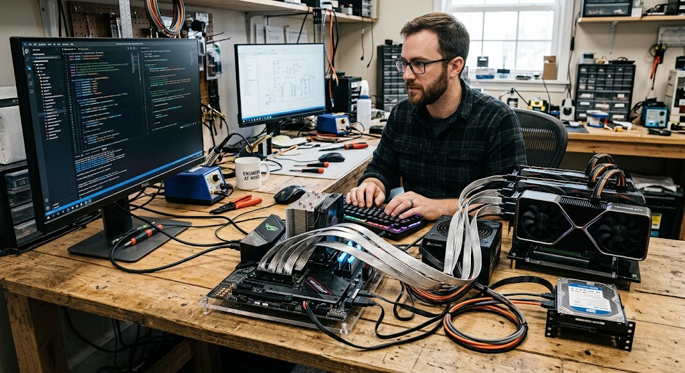

From a local script to a GPU-served AI app on Kubernetes.
I spent most of my career as a full-stack software engineer, then moved into sales solutions engineering. This project was how I rebuilt the end-to-end muscle — system design through deployment — for the AI era. Every layer here I built and debugged myself.

00 Why I built this
The honest starting point: I wasn't sure whether working in AI meant going back to full-time software development.
As a software engineer I owned the whole chain — system design, data modeling, business objects, middleware APIs, and the single-page apps that consumed them. That end-to-end ownership was the part I missed. Skilling up on AI in scattered pieces never gave me the same confidence.
So instead of another course, I built one complete system from scratch: a retrieval-augmented chat app with an agent, running on real cloud infrastructure I provisioned myself. The goal was muscle memory — the kind you only get by shipping something with real stakes and debugging it when it breaks. It broke plenty. That was the point.
Two things I specifically wanted to prove out
1. What actually makes an agent an agent. "Agent" is an overloaded word — most things called agents are a chatbot with a system prompt. I wanted to build the real thing and understand the mechanics: a model that reasons about a request, decides on its own which tool to call, executes it, reads the result, and loops until it can answer — while carrying memory across turns so context accumulates. That means genuine function-calling wired to real tools (a live weather API, a calculator, time, a knowledge-base search), a guard against redundant tool calls, and per-session conversation state. The judgment I care about surfacing here is the design reasoning: knowing the difference between prompting a model to sound agentic and architecting a loop where the model is actually the orchestrator deciding what to do next.
2. How models are served in a modern, cloud-native world. The other reason was to serve an LLM the way it's done at scale — not a model baked into a container as an afterthought, but GPU inference running as a first-class Kubernetes workload: a dedicated GPU nodepool, the NVIDIA device plugin exposing nvidia.com/gpu as a schedulable resource, taints and tolerations so only inference lands on the expensive hardware, and vLLM serving an OpenAI-compatible endpoint that the rest of the cluster consumes over a normal service. This is the same pattern the large AI clusters and HPC shops use to pack accelerators into orchestrated, schedulable pools. Getting an A10 to serve a 7B model as a clean Kubernetes citizen — schedulable, tear-down-able, reproducible from code — was the point as much as the app on top of it.
01 Architecture
A RAG + agent application on Oracle Container Engine for Kubernetes, serving an open LLM on an A10 GPU.

A question flows from the browser through an OCI load balancer to the FastAPI backend, which embeds it, searches Qdrant for relevant document chunks, injects them as context, and asks the LLM to answer — grounded in the source material with citations. Agent mode adds autonomous tool-calling. Worker nodes sit on a private subnet with no public IPs; only the load balancer is exposed.
w1 FastAPI + local LLM
Get a local model answering through code I wrote — not a chat box.
The first week was about making the environment feel like home. FastAPI stands in for .NET Web API — same controller-and-route mental model, different syntax. Ollama runs an open model entirely on the laptop, exposing a REST API the backend calls. The deliverable was a streaming /chat endpoint.
w2 Embeddings + Qdrant
The week the whole thing clicked: meaning as math.
An embedding is just a vector that represents meaning. Two similar sentences land close together; unrelated ones don't. Cosine similarity measures the distance. Once that lands, semantic search stops being magic — it's a query against a vector database, the same shape as a SQL WHERE clause, but by meaning instead of exact match.
Running this printed 0.67 for a related pair and 0.02 for an unrelated one. That gap is the entire basis of retrieval — set a threshold around 0.3 and you have a working relevance filter.
w3 Full RAG + React UI
Wire retrieval and generation into one grounded answer, then put a face on it.
RAG is the assembly of the previous two weeks: embed the question, retrieve the closest chunks, inject them into the prompt as context, and ask the model to answer using only that context. The result is grounded — it cites sources and admits when it doesn't know, instead of hallucinating. A React chat UI streams the answer back token by token.
w4 Agents + tool calling
The part I most wanted to get right: a real agent, not a chatbot dressed up as one.
This is where the app stops just answering and starts doing — and where the design thinking matters most. A real agent isn't a prompt that sounds autonomous; it's a loop where the model is the orchestrator. It reads the request, decides on its own which tool fits the intent, calls it, reads the result, and decides whether it now has enough to answer or needs another step. I wired genuine function-calling to four real tools — current time, a calculator, a live weather API, and a knowledge-base search — so the model's decisions execute against actual systems, not stubs.
Two pieces make it behave like an agent rather than a one-shot call. A reasoning loop with a step budget lets the model chain tools (look something up, then calculate on it) instead of firing once. And per-session memory carries context across turns, so a follow-up like "and what about tomorrow?" resolves against what came before. I also added a dedup guard so it won't re-call an identical tool in a loop — a small but real correctness fix that only shows up once you're running a genuine multi-step agent.
Ollama and vLLM express tool calling differently — Ollama's Python library versus vLLM's OpenAI-format API. I isolated the difference behind two small helpers so the same agent loop runs against either backend with just an env-var switch. The tool schemas were already in OpenAI format, so they ported unchanged — the same agent that reasoned against a local model now reasons against a GPU-served one in the cluster.
w5 Cloud deployment
The week my infrastructure background became the advantage.
Everything to here was application logic. Week five was pure infrastructure: containerize the app, provision an OKE cluster with Terraform, serve the model on an A10 GPU with vLLM, and automate the whole thing through GitHub Actions. Corporate policy blocked Docker on my laptop — so images build in the pipeline instead, which is arguably the more correct pattern anyway.
The portable design paid off here: the same backend image runs locally against Ollama and in-cluster against vLLM, switched by a single environment variable.
The piece I most wanted to do properly was serving the model the cloud-native way — GPU inference as a first-class Kubernetes workload, the same pattern the large AI clusters use. That meant a dedicated GPU nodepool separate from the CPU workers, the NVIDIA device plugin exposing nvidia.com/gpu as a schedulable resource, a taint on the GPU node with a matching toleration on vLLM so only inference lands on the expensive hardware, and vLLM serving an OpenAI-compatible endpoint that the rest of the cluster consumes over an ordinary service. The GPU becomes just another schedulable, reproducible, tear-down-able resource in the pool — which is exactly how accelerators are managed at scale.
The vLLM pod requests nvidia.com/gpu: 1 as a resource limit, carries a nodeSelector for the GPU nodepool label, and tolerates the GPU node's taint. The scheduler places it only where a GPU is advertised and free. Flip the nodepool off and the accelerator leaves the pool entirely — no idle GPU quietly billing. That's the same schedulable-accelerator model that HPC-scale AI clusters run on, just at one-node scale.
→ Deploy it yourself
The entire stack is one-click deployable into your own OCI tenancy.
Because the infrastructure is fully described in Terraform and packaged for OCI Resource Manager, anyone can deploy it. Fill in a form, pick a compartment, toggle the GPU, and go. Or run it locally:
enable_gpu = false unless actively testing inference, and tear it down when done.
→ Stack & endpoints
What runs where, and the API surface.
Backend endpoints
Infrastructure (Terraform-managed)
- VCN with public/private subnets, NAT + service gateways
- IAM dynamic group + policies for OKE
- OCIR private repositories for images
- OKE cluster + CPU nodepool (E5.Flex)
- Toggleable A10 GPU nodepool for vLLM
- In-cluster image pull secret
! Gotchas & fixes
The real education. None of these were in any tutorial — each cost real debugging time.
OKE nodes use CRI-O, which refuses ambiguous short names like qdrant/qdrant:latest. Fully qualify every public image.
Images were tagged iad.ocir.io but the pull secret authenticated against us-ashburn-1.ocir.io. Same region, different hostname — so pulls fell back to anonymous and failed with "Anonymous users are only allowed read access on public repos." The secret's registry host must match the image tag host exactly.
Setting boot_volume_size_in_gbs = 200 provisions a bigger disk, but the filesystem stays at the default ~37GB — so vLLM's image + model download got evicted for low ephemeral storage. A cloud-init step must grow the filesystem onto the larger volume with oci-growfs -y.
Kubernetes auto-injects a VLLM_PORT variable for the vLLM service (a tcp://… URI), which collides with vLLM's own config var of the same name. vLLM crashed parsing the URI as a port. Fix: set VLLM_PORT: "8000" explicitly in the pod env.
A Deployment with a ReadWriteOnce volume briefly runs two pods during a rolling update — and they deadlock fighting over the single-attach volume. Set strategy: Recreate so the old pod releases the volume before the new one starts.
The backend requested a model name vLLM wasn't serving, so vLLM returned an error payload with no choices key and the client crashed. Align the requested model with the served one, and guard the parse so a vLLM error surfaces clearly instead of a cryptic KeyError.
VM.Standard.E4.Flex failed to pair with the OL8 node image ("shape and image are not compatible") even though the image name was correct. Switching to VM.Standard.E5.Flex resolved it — the issue was shape availability, not the image.
Private-subnet workers failed to register with the control plane until the security lists allowed the specific cross-subnet ports OKE needs — 6443 and 12250 (workers → API), 10250 (API → kubelet), plus the ICMP path-MTU rule.
→ Teardown
The whole point of infrastructure as code: it all comes back from one command.
Because every resource is Terraform-managed, teardown is complete and clean — no orphaned load balancers quietly billing, no manual console cleanup. And it all rebuilds from terraform apply whenever I want it back.
§ Why Day 2 matters
A note for the people who fund, staff, and stake their reputation on AI systems — before the engineering detail. The demo that wows a boardroom and the system that survives ten thousand real users are two very different things. The gap between them is Day 2.
Almost every organization can now stand up an impressive AI demo in a week. That's Day 1, and it's genuinely valuable — it proves the idea works. But a demo answers one question, once, for one person who is rooting for it to succeed. A production AI system answers thousands of questions, for people who don't care how clever it is, at a cost that shows up on a real invoice, with a failure mode that can quietly mislead someone before anyone notices. Getting from the first to the second is not a bigger demo. It's a different discipline.
What changes when the system is real
Three pressures arrive the moment an AI system leaves the demo stage, and each maps to a Day 2 capability:
- Scale brings cost, and cost brings scrutiny. A GPU that costs a few dollars an hour for one demo user becomes a five- or six-figure line item when a whole team — or your customers — depend on it. Leadership will, correctly, ask: what are we paying per answer, and is that money buying useful work or idle silicon? Without observability and cost controls, no one can answer. (Tracks B and C.)
- "Is it good?" becomes a question you must answer with data. When one team ships a model and another wants to improve it, "it feels better" doesn't survive a room full of stakeholders. You need a measured, repeatable way to say a change helped — or, just as importantly, that it didn't. Otherwise every model update is a gamble dressed up as progress. (Track A.)
- Trust becomes the whole product. A demo that's confidently wrong is a funny story. A production system that's confidently wrong — to a customer, in a contract, about a number — is a liability. As AI systems get chained together (agents calling agents, tools calling models), a small error can get laundered into a plausible, authoritative-sounding lie by the time it reaches a human. Engineering for honest failure isn't polish; it's the difference between a tool people trust and one they quietly stop using. (Track D.)
The tracks that follow are my hands-on attempt to build every one of those Day 2 capabilities from the ground up — fine-tuning with real evaluation, full-stack observability with cost as a first-class signal, a control layer in front of the models, and multi-agent coordination that fails honestly. Not because any single piece is novel, but because operating AI — not just building it — is where real-world systems succeed or fail. And the only way I know to genuinely understand that is to build it by hand and let it break.
» Day 1 → Day 2
Day 1 proved I could build it. Day 2 proved I could operate it — fine-tune the model and measure whether it helped, see everything from GPU silicon to cost-per-token, put a real gateway in front of it, and get multiple agents collaborating on real work. Four tracks, all built by hand, all debugged from real failures.
The same discipline ran through every track: build and validate on CPU, spin the GPU up only for the irreducible work, tear it down immediately. And a recurring truth — the hard part was almost never the happy path. Most of the learning came from things breaking: a saturated benchmark, a library that renamed an argument under me, a container missing git, agents laundering an error into a confident lie. Each one is called out below, because the fix was the lesson.
A Fine-tuning & MLOps
Fine-tune Qwen2.5-7B for text-to-SQL — and, more importantly, measure whether it actually improved. The measurement discipline mattered more than the training.
The plan: build an evaluation harness first, get a baseline, fine-tune with a LoRA adapter, then re-measure. The order is deliberate — you can't tell if fine-tuning helped without a number to beat, so the baseline comes before the training, not after.
Evaluation, done right
The harness scores generated SQL by executing it against a real database and comparing the result set to a gold query — not by comparing query strings. SQL can be written many correct ways, so only the returned rows are a fair test. This is the same execution-based methodology academic benchmarks (Spider, BIRD) use.
The harness also validates itself: it scores the gold SQL against itself and must hit 100%. That check caught two bugs in my own eval design before they could corrupt real results. An eval is software too — it needs testing.
LoRA — specializing a 7B on a 24GB GPU
Full fine-tuning of a 7B model needs ~60GB+ of GPU memory — it won't fit on a 24GB A10. LoRA freezes the model and trains tiny adapter matrices instead — about 0.5% of the parameters. QLoRA additionally loads the frozen model in 4-bit to shrink memory ~4×. The output is a small adapter served on top of the base weights.
Training ran as a Kubernetes Job (runs to completion, unlike a Deployment) on the GPU node, writing the adapter to a shared PVC that vLLM later mounts to serve it. Watching GPU utilization sit at 100% and memory at ~46% via nvidia-smi made the QLoRA memory savings concrete.
The honest result
Base Qwen scored 81.2% on the hard eval; the fine-tuned adapter scored 87.5%. A small, real, believable lift — and inspecting the failures showed the base model's "mistakes" were often correct-but-cosmetically-different SQL. The mature MLOps takeaway: a modern 7B is already strong at SQL, we measured rather than assumed, and "we found little headroom and didn't ship a pointless model" is a legitimate outcome.
Python 3.14 was too new for MLflow (dropped to 3.12). MLflow's file-store backend was deprecated (switched to SQLite). The trl library renamed max_seq_length to max_length — a one-line fix found only by reading the crash. The training container was missing git, and had python3 but not python. A too-aggressive Job TTL deleted the training logs before I could read them. None of these are in tutorials — they're the texture of real ML infra work.
B Observability & cost
See everything the system does — cluster, GPU, application, and cost — built by hand from plain manifests so every layer is understood, not black-boxed.
The stack, in dependency order: Prometheus (collects and stores metrics) → DCGM exporter (GPU telemetry) → Grafana (dashboards) → app metrics → a token-economics view. All in a dedicated monitoring namespace.
The pull model + opt-in discovery
Prometheus scrapes (pulls) metrics on an interval rather than receiving them, using the Kubernetes API to discover what exists (which is why it needs RBAC — a ServiceAccount, ClusterRole, and binding). The elegant part: any pod annotated prometheus.io/scrape: "true" gets discovered automatically. So DCGM, vLLM, and the gateway all joined monitoring later without touching the scrape config again.
GPU as a dashboard, cost as a metric
The NVIDIA DCGM exporter (a DaemonSet on GPU nodes) feeds Prometheus GPU utilization, memory, temperature, and power. Watching power and temperature climb as a model loaded, then utilization spike during inference, made the physical reality of the hardware tangible.
The piece I most wanted: a token-economics dashboard tying GPU utilization (DCGM) and token throughput (vLLM) to a fixed hourly GPU cost. A GPU costs the same whether busy or idle — so the economic question is tokens-per-dollar. High utilization + high throughput = low cost-per-token. On accelerators, cost is a performance metric.
Grafana reaches Prometheus by its service DNS name (prometheus.monitoring.svc:9090), not localhost — separate pods talk over the cluster network. The CRI-O fully-qualified-image-name rule from Day 1 applied again (docker.io/prom/prometheus:...). And on macOS, the Grafana/Prometheus UIs load at 127.0.0.1, not localhost (an IPv6 quirk). The DCGM pod sits Pending when the GPU is down — expected, not broken.
C Middleware gateway
A FastAPI gateway between clients and the model — routing, caching, rate limiting, metrics. The same middleware patterns from classic web engineering, applied to LLM serving.
In production, clients shouldn't hit the model directly. A gateway is the control point for cost, safety, and observability — one front door with policy. Four capabilities, each validated on CPU with a mock upstream before any GPU spend:
- Routing — a request's
taskfield picks the model:sql→ the fine-tuned adapter, everything else → base. Model selection becomes architecture, not a per-request detail. - Caching — hash the (model, prompt, params) and check a cache before calling the GPU. A hit returns instantly with zero GPU time. Only deterministic (temperature 0) requests are cached — caching random output would be wrong.
- Rate limiting — a token-bucket limiter allows short bursts but caps sustained rate, rejecting excess with a cheap HTTP 429 instead of overwhelming the GPU.
- Metrics — every request, cache event, and rejection is counted and labeled, feeding the Track B Grafana stack.
"cached": true, and the GPU dashboard stays flat. That flat line during a served request is cost savings, made visible.
After pushing new images, the UI still showed the old version. The cause: the deployments were pinned to a specific commit SHA from an earlier deploy — so restarts faithfully re-pulled the old image forever, regardless of imagePullPolicy. The fix is kubectl set image with the new SHA. Also classic: a container server must bind --host 0.0.0.0, not localhost, to be reachable.
D Multi-agent team
Two specialized agents collaborating on real work — an Analyst that orchestrates and a SQL Specialist that queries a database — with their reasoning shown live in the UI.
Built by hand from primitives to understand the machinery: an Agent is a role plus tools plus a reasoning loop (reason → act → observe → repeat). The key move is delegation as composition — one agent wrapped as another agent's tool. The Specialist becomes a callable capability of the Analyst. That's the whole multi-agent idea in a few lines.
Each agent routes to the right model through the Track C gateway: the Specialist to the fine-tuned sql-lora adapter, the Analyst to the base model. Two models, two roles, selected by architecture. The Specialist's tool actually executes SQL — real actions, not stubs.
The fixes turned "error → fiction" into "error → honest failure or self-repair": typed failure markers (a sub-agent failure can't be mistaken for data), error-aware deduplication ("that failed — fix it" rather than "use this result"), and an explicit honesty rule ("never invent data; 'I couldn't retrieve it' is an acceptable answer"). On the same question afterward, the Specialist repaired its own missing JOIN and returned the correct answer. Same models — the difference was entirely the engineering around them.
Watching agents think, live in the UI
A backend SSE endpoint runs the team and streams each reasoning step to the browser; a React panel renders them as a color-coded timeline — who acted, what they did, and why — then the final answer. The bridge between synchronous agents and a streaming UI is a queue: the agent thread pushes events in, the SSE generator pulls them out as they happen.
Python imports differ between running a script directly (from framework import) and importing it as a package (from .framework import) — needing a try/except import and an __init__.py. The Docker build context had to move to the repo root so the backend image could include the agents code. And the LoRA-serving vLLM manifest had dropped the tool-calling flags (--enable-auto-tool-choice, --tool-call-parser hermes), which broke Day 1's Agent mode until re-added — the final manifest now serves RAG, the SQL adapter, the agent team, and native tool-calling from one vLLM.
! Day 2 lessons
Beyond any single track, the themes worth carrying forward — most of them learned the hard way.
- Measure before you optimize. The eval built first revealed the model was already good, saving a pointless fine-tune. You can't improve what you can't measure — or trust a measurement you haven't validated.
- Inspect failures, never just the aggregate. A true score with a false interpretation is worse than no score.
- The ecosystem drifts under you. Renamed arguments, deprecated backends, too-new Python — each a one-line fix once diagnosed. Working at the frontier means libraries move faster than tutorials.
- Containers are minimal; assume nothing. Missing
git,pythonvspython3, fully-qualified image names,--host 0.0.0.0. - Preserve your evidence. A too-aggressive Job TTL deleted logs before they could be read. Observability applies to your own build process, not just the app.
- Errors compound in multi-agent systems. Typed failures and honesty rules aren't polish — they're the core engineering.
- Cost is a first-class metric. Build on CPU, GPU only for the irreducible work, tear down immediately. On accelerators, cost and performance are two views of the same thing.
↗ Your turn — share your take
This is a learning project, and the best part of learning in the open is what comes back. I'd genuinely love to hear how you'd approach any of this.
There's no single right way to build and operate AI systems, and I'm certain some of my choices here have better alternatives. So if any of this sparked a thought, I want to hear it:
- Would you have done it differently? A different eval strategy, a managed observability stack instead of hand-rolled Prometheus, an off-the-shelf gateway, a real agent framework over my hand-built one — tell me what you'd change and why.
- Have you shipped something like this for real? War stories from production AI — what broke, what surprised you, what you wish you'd known on Day 1 — are worth more than any tutorial.
- Are you on the same journey? If you're learning this by building it too, I'd love to compare notes, swap gotchas, and cheer each other on.
- Did something here help you? That alone would make my day — let me know which part.
And if you want to actually run any of this yourself, everything — the code, the Terraform, the manifests, all four Day 2 tracks — is public in the repo. Fork it, break it, improve it. That's exactly what it's there for.
Day 2 · LoRA · MLflow · Prometheus · Grafana · DCGM · gateway · multi-agent
A learning project — the muscle memory was the deliverable. Day 2 is where it became a system.